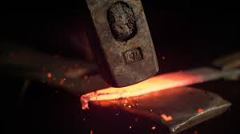
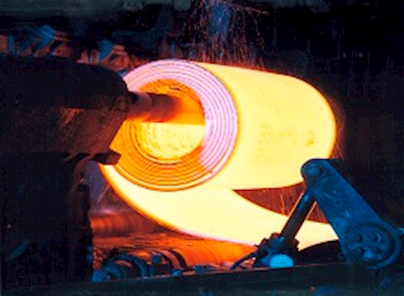

8 – Estabilidad de la Estructura Cristalina de los Metales. Justificar
Los iones, al estado sólido, se disponen ordenadamente según un modelo geométrico, y a una distancia mutua característica, ya que forman una estructura. Dentro de la estructura los iones se repelen entre sí, obligando a los iones interiores a permanecer estables en su posición. Los electrones producto de la ionización, permanecen libres dentro de la estructura y se encuentran en constante movimiento de atracción hacia las cargas positivas y de repulsión de las cargas negativas. Los iones, particularmente los de la capa exterior, son retenidos por la nube de electrones que los rodean estabilizando la estructura.
9 – Origen de la Resistencia Mecánica de los Materiales Metálicos
El origen de la resistencia mecánica de los materiales mecánicos está en el tipo de unión característica de los metales en estado puro o en aleaciones: el enlace metálico. En este tipo de unión no ocurre transferencia de electrones por la baja electronegatividad de los metales. Los átomos se encuentran tan juntos que los electrones no están asociados a un átomo en particular sino que son atraídos por los núcleos de los átomos vecinos. Los e constituyen una nube o gas electrónico, en la superficie metálica, que se desplaza por la estructura cristalina. Es un enlace muy fuerte entre átomos. Para romper este enlace hay que entregar mucha energía. Por eso el punto de fusión, resistencia mecánica y evaporación es elevado.
10 – ¿Qué Se Entiende por Comportamiento Elástico y Plástico en los Metales?
La deformación elástica se da cuando al aplicar una carga, se produce deformación, luego se retira la carga y el material recobra sus dimensiones originales.
La deformación inelástica se produce cuando al aplicar una carga, se produce deformación, y al retirar la carga el material no recupera sus dimensiones originales.
El origen de la capacidad de deformarse sin fracturarse de los metales esta dado por la estructura cristalina que esta ordenada en forma de capas. Al verse sometidas a una carga estas se deslizan una sobre otras. Estos son los llamados planos de deslizamiento que se deslizan en direcciones que son todas aquellas direcciones cristalográficas que cuentan con la mayor densidad atómica lineal, es decir con la mayor cantidad de átomos o iones con unidades de longitud. Obviamente por lo dicho los materiales o metales con mayor cantidad de sistemas de deslizamiento tenderán a tener una mayor capacidad de conformación plástica.
Si la carga produce un desplazamiento donde los átomos de las capas no alcanzan posiciones nuevas dentro de la estructura, al desaparecer la solicitación, estos volverán a ocupar su lugar original. Esta deformación será elástica.
En cambio, si el desplazamiento de capas es tal que los átomos llegan a ocupar lugares nuevos dentro de la estructura, la deformación será permanente, y la denominamos plástica.
El período de transición entre la deformación plástica y la elástica se denomina límite elástico.
En los materiales reales existen defectos cristalinos que por su existencia facilitan el movimiento de los mecanismos de deformación plástica. La estructura se deforma en distintas etapas y se facilita la conformación.
11 – Origen de la Plasticidad y Fragilidad en los Metales
Fragilidad: Rotura del material sin deformación. Su estructura es compacta.
Plasticidad: Permite que el material tenga deformación permanente sin llegar a la rotura.
Cuando el metal se deforma aumenta la distancia entre iones y la fuerza de atracción se debilita. Entonces cuando se aplica una carga no tan grande el material puede recobrar su forma original. Cuando se aplica una carga mayor y la distancia entre iones es más grande el enlace pierde fuerza.
A medida que se aplica más carga el material se endurece ya que:
- La red cristalina queda deformada.
- Los sistemas de enlace se van deformando.
- El defecto lineal cristalino se acaba.
La fluencia es tal que el material se resiste y hay que aumentar la carga para seguir deformándolo y rompiéndolo.
12 – ¿Qué Se Entiende por Ductilidad y Fragilidad en los Metales? Justifique ¿Cómo Se Evalúa?
Ductilidad es la capacidad de deformación plástica en alargamiento, es decir sentido longitudinal. Se evalúa colocando la probeta para que sufra una deformación longitudinal en un ensayo de Tracción y se alargue hasta que se rompe. Buscando en el ensayo diferentes tipos de roturas según el material: estricción, rotura en un punto, etc.
Fragilidad: Rotura del material sin deformación. Su estructura es compacta.
Los ensayos se realizan a probetas que presentan muescas o entallos. El motivo de la muesca es para generar una fisura normalizada.
Tipos de probetas:
- Método Charpy: Probeta horizontal. Impacto sobre la probeta en forma vertical.
- Método Izod: Probeta en posición vertical. Impacto sobre la probeta como péndulo.
13 – ¿A Qué Se Debe la Conductividad Térmica en los Metales?
Cuando una estructura se ve sometida a un gradiente térmico, los iones y electrones modifican su estado de movimiento, intensificándose en la zona de mayor temperatura. Al aumentar el estado de movimiento de los iones, aumentan el volumen ocupado generándose una dilatación, y al aumentar su distancia inter iónica disminuye su estabilidad, por lo que el metal se ablanda y puede ser moldeado con menor energía que si fuera en frío.
Los electrones por su parte, aceleran su desplazamiento por lo cual se producen impactos disipándose calor hacia el exterior, y a medida que se continúa agregando calor los impactos se vuelven más intensos y frecuentes llegando a fundir el material.
A medida que la nube electrónica se desplaza, el material aumenta su temperatura en otras zonas, transmitiendo el calor.
14 – ¿A Qué Se Debe la Conductividad Eléctrica en los Metales?
Es la característica propia de los metales, el átomo cede electrones, queda un ion electropositivo, los electrones libres forman la nube electrónica. La electricidad es un flujo de electrones, por lo tanto, los metales conducen la electricidad.
15 – Resistencia Eléctrica. Concepto. Relación con Temperatura
La resistencia eléctrica de los materiales metálicos depende principalmente de dos factores: El parámetro de Red y el tipo de Iones.
La resistencia eléctrica es la oposición de una estructura al paso de la corriente.
A temperatura ambiente los electrones se desplazan por el conductor en forma desordenada y chocando con los iones. La estructura entonces detiene su circulación. Para asegurar su circulación es necesario aplicar una diferencia de potencial.
Al aplicarse un campo eléctrico al material, los electrones libres se transportan a la zona de menor potencial. Parte de estos chocan con los iones y pierden su energía cinética que es disipada como calor. Luego el electrón volverá a acelerarse producto de la permanencia del campo eléctrico.
A Medida que va aumentando la temperatura desde el cero absoluto aparecen vibraciones en la red atómica (Fonones) que influyen en la propagación de electrones. La repulsión entre los electrones incrementa la dispersión apareciendo el fenómeno de resistencia eléctrica que aumentará con la temperatura.
16 – ¿Por Qué el Aluminio Puede Sustituir al Cobre en Ciertos Conductores Eléctricos?
Un conductor de aluminio de misma longitud y peso es más conductivo que uno de cobre y más barato. Sin embargo el cable sería más grueso. Medida en volumen la conductividad eléctrica es tan sólo el 60% de la del cobre. Su mayor ligereza reduce el esfuerzo que deben soportar las torres de alta tensión y permite una mayor separación entre torres, disminuyendo los costes de la infraestructura. En aeronáutica también sustituye al cobre.
17– ¿Por Qué los Fenómenos de Superconductividad se Dan a Bajas Temperaturas?
La resistividad eléctrica de un metal decrece al disminuir la temperatura. A temperaturas cercanas al 0 absoluto (-273ºC) y con materiales muy puros, la energía vibratoria atómica llega a un mínimo, el espacio entre los electrones es máximo y la resistencia eléctrica mínima, ya que el grado de orden de la estructura cristalina tiende a ser el máximo posible con lo cual los electrones se pueden mover con mayor facilidad.
En ciertos materiales a temperaturas cercanas a 0ºK la resistencia eléctrica disminuye bruscamente ya que el material adopta el estado de condensado de Bose-Einstein donde los electrones se asocian de a pares para desplazarse libremente sobre las estructuras cristalinas, logrando una resistencia eléctrica prácticamente nula.
18 – Deformación en Frío. Definición y Características
Conformación en Frío: Se logra una mayor exactitud dimensional y una mejor terminación superficial y destacada mejora de las propiedades mecánicas. Asimismo aumenta la resistencia pero disminuye la ductilidad. Se obtienen piezas o productos de determinadas formas y tamaños pero sin pasar por la etapa de fusión.
Clasificación:
- Forja
- Laminación
- Extrusión
- Estampado
- Embutido Profundo
- Trefilación
La principal razón de este agrupamiento es que en el segundo grupo el esfuerzo siempre es simétrico a un eje. Mientras que en la forja no es así.
A su vez la forja puede ser:
- Libre: Cuando le aplican impacto al material y fluye libremente.
- De matriz: Los movimientos de formación del material están limitados por la matriz.
Otra clasificación de forja:
- Por impacto: Un martillo le pega desde determinada altura.
- Por prensa: (lentamente).
Laminación: Dos cilindros giran en sentido contrario. Cuando el material pasa por los cilindros se llama pase. La última pasada es en frío para endurecer y se llama temple.
Trenes de laminación:
- Dúo: El material gira para un solo lado (blooming).
- Dúo Reversible: Gira en dos sentidos para volver a pasarlo más fácil (blooming reversible).
- Trío: El del medio gira por rozamiento.
- Cuarto: Cuanto más chico el rodillo de contacto, más presión ejerce. Pero puede romperse por eso se apoyan sobre grandes para que éstos hagan el esfuerzo. El grande realiza el esfuerzo, el chico transmite la presión.
Extrusión:
- Directa: El material fluye en el mismo sentido que se aplica la carga. A veces se usa lubricante para que pase.
- Inversa: El fin de la matriz es ciego.
Estampado: Para espesores pequeños.
Embutido Profundo: Para mayores espesores.
Trefilación: El material es traccionado por un objeto que lo fuerza a pasar a través de una matriz dura y fija.
Imágenes:
 Videos de YouTube:
19 – Deformación en Caliente. Consecuencias
Conformación en Caliente: Permite obtener elevadas deformaciones, ya que en estas condiciones el material pierde su rigidez característica, llegando a un estado de extrema ductilidad y escasa resistencia. De esta manera es necesaria una baja energía para deformar.
Las altas temperaturas dan lugar a un proceso de recristalización dinámica, motivo por el cual la estructura se debilita y se permite a los iones reubicarse en nuevas posiciones con facilidad.
Este proceso presenta dos desventajas:
- Los fenómenos de oxidación superficiales se ven muy favorecidos por las altas temperaturas.
- Se logra una mala terminación superficial por lo que se requiere mecanizado posterior.